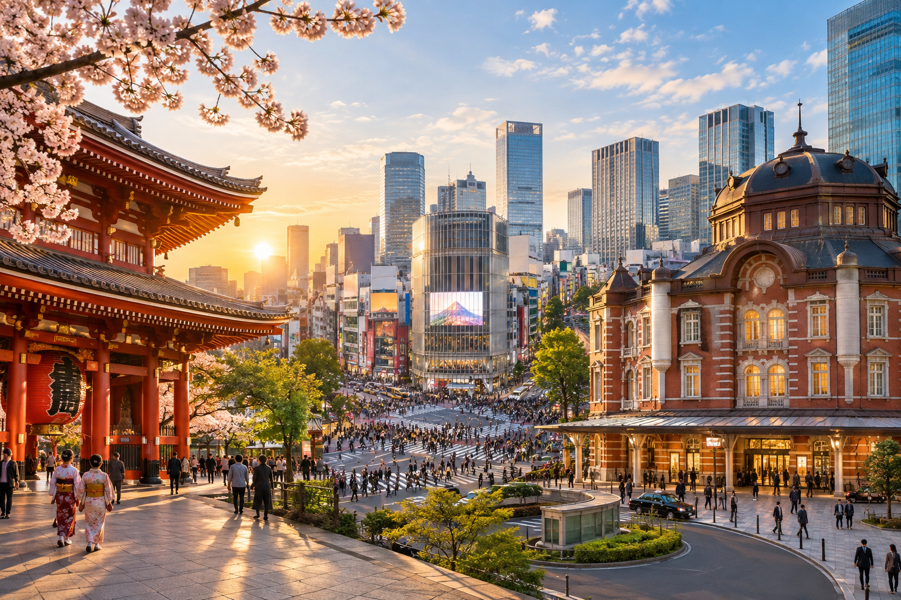
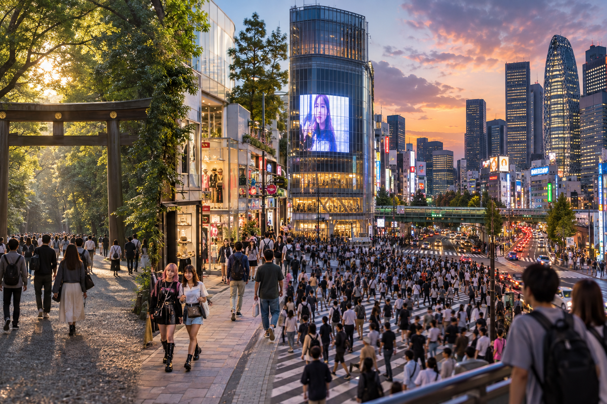
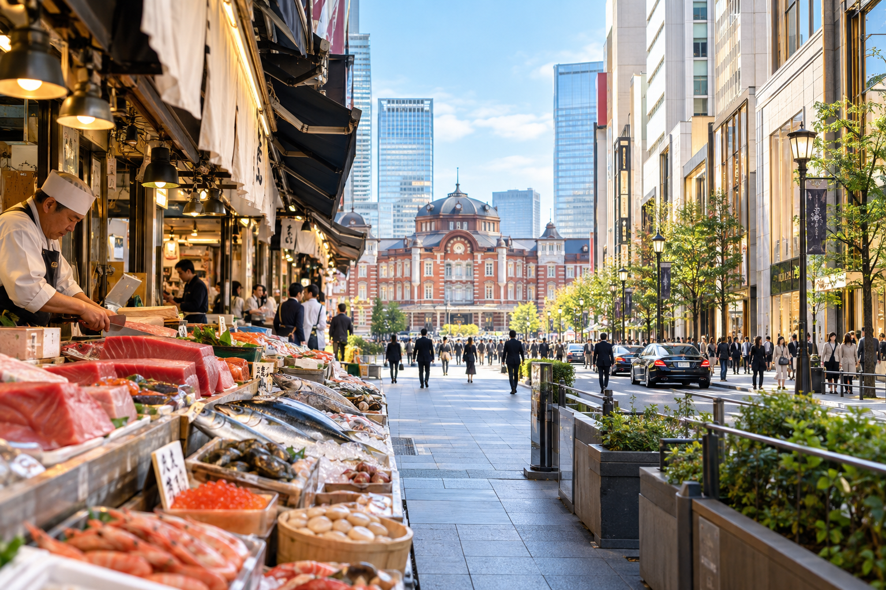

Tokyo 3-Day Itinerary for First-Time Visitors
Three days in Tokyo is enough to experience several of the city's most important sides, but only if you resist trying to see everything. Tokyo is enormous, and a short itinerary becomes tiring very quickly when attractions are chosen from opposite sides of the city without considering geography.
For a first visit, I recommend organizing the three days around neighborhood clusters. This itinerary starts with the older atmosphere of eastern Tokyo, moves through the modern western districts on the second day, and uses the final day for central Tokyo. That gives you temples, food streets, shopping, city views, nightlife, and modern neighborhoods without spending half the trip changing trains.
This is a Tokyo-only itinerary. I would not use one of these three days for Hakone, Nikko, Kamakura, or another destination outside the city. If you only have three full days, Tokyo itself deserves all three. Travelers with more time can consider an outside trip separately.
Tokyo 3-Day Itinerary at a Glance

| Day | Main Areas | Be st For |
|---|---|---|
| Day 1 | Asakusa → Ueno → Akihabara | Traditional Tokyo, temples, markets, culture |
| Day 2 | Meiji Jingu → Harajuku → Shibuya → Shinjuku | Modern Tokyo, fashion, city views, nightlife |
| Day 3 | Tsukiji → Ginza → Tokyo Station & Marunouchi | Food, shopping, central Tokyo, flexible sightseeing |
The route is deliberately simple.
You can change individual attractions, but I would keep the area order whenever possible.
Who This 3-Day Tokyo Itinerary Is For
This plan works best if:
- ✓This is your first visit to Tokyo
- ✓You have three full sightseeing days
- ✓Tokyo is part of a wider Japan trip
- ✓You want the major first-time experiences
- ✓You are comfortable walking
- ✓You want a balance of traditional and modern Tokyo
It is not designed for someone whose main priority is:
- ✓Anime shopping
- ✓Museums
- ✓Theme parks
- ✓Nightlife
- ✓Luxury shopping
- ✓Food tourism
Those travelers should adjust one or more blocks around their interests.
What Counts as Three Days in Tokyo?
I mean three full sightseeing days.
Your international arrival day should normally be separate.
For example:
Monday: Arrive in Tokyo
Tuesday: Day 1
Wednesday: Day 2
Thursday: Day 3
Friday: Continue to Kyoto
That is much better than landing at 3 PM and calling the arrival evening “Day 1.”
Immigration, baggage collection, airport transport, hotel check-in, and jet lag can use much more time than expected.
Where Should You Stay for This Itinerary?
You do not need one specific neighborhood for this route.
A hotel near a useful station is more important than being beside one attraction.
Areas that can work well include:
- ✓Shinjuku
- ✓Shibuya
- ✓Ueno
- ✓Tokyo Station area
- ✓Asakusa
- ✓Other well-connected central neighborhoods
The full hotel-area comparison belongs in Where to Stay in Tokyo: Best Areas for First-Time Visitors.
For this itinerary, check that your hotel gives you easy railway or subway access and does not require a long walk at the beginning and end of every day.
Before Day 1: Set Up the Basics
Do a few things before starting your sightseeing.
Have:
- ✓Mobile data
- ✓A map and train-routing app
- ✓A compatible IC card or other local fare method
- ✓Comfortable shoes
- ✓Some cash
- ✓A charged phone
- ✓A small day bag
You do not need to understand Tokyo's entire railway system before leaving the hotel.
Follow each route individually.
Our How to Get Around Tokyo: Subway, Trains and Transport guide covers the local system separately.
Day 1: Asakusa, Ueno and Akihabara
Day 1 focuses on eastern Tokyo.
This gives you a softer introduction to the city than starting with several giant commercial districts.
The basic route is:
Asakusa → Ueno → Akihabara
Asakusa and Ueno show more of Tokyo's traditional and cultural side, while Akihabara gives you a very different modern finish.
If anime, gaming, or electronics do not interest you, Akihabara is optional.
Morning: Start in Asakusa
Try to reach Asakusa relatively early.
The area becomes busier as the day develops, and an earlier start makes it easier to appreciate the temple streets before the heaviest visitor traffic.
Your main first stop is:
Senso-ji
It is one of Tokyo's best-known temples and a natural starting point for a first visit.
Do not treat it as a five-minute photo stop.
The surrounding area matters too.
Walk Through Kaminarimon
Approach through the famous Kaminarimon, or Thunder Gate.
This is one of the most recognizable entrances in Tokyo.
From here, continue toward Senso-ji through Nakamise.
Walk Nakamise Shopping Street
Nakamise-dori runs toward the temple and contains small shops selling items such as:
- ✓Snacks
- ✓Souvenirs
- ✓Traditional goods
- ✓Sweets
- ✓Small gifts
You do not need to stop at every shop.
Walk slowly, look around, and choose anything that genuinely interests you.
If the street is very crowded, explore some of the smaller surrounding streets as well.
Visit Senso-ji
Give yourself time for the temple grounds.
Be respectful because this remains an active religious site.
You may see visitors:
- ✓Offering prayers
- ✓Drawing fortune slips
- ✓Buying charms
- ✓Visiting nearby shrine buildings
You do not need to copy every ritual if you are unsure what it means.
Observe the posted instructions and behave respectfully.
Do Not Rush Out of Asakusa
After the main temple, walk around the neighborhood.
Depending on your interests, you could include:
- ✓Asakusa Shrine
- ✓Traditional side streets
- ✓Kappabashi kitchenware area
- ✓Sumida River views
- ✓Asakusa Culture Tourist Information Center
The goal is not to complete every nearby attraction.
Choose one addition.
Optional: Asakusa Culture Tourist Information Center
This can be a useful short stop because it gives you another perspective over the surrounding streets.
It also helps you understand how tightly packed the historic core of Asakusa is.
If you already have a full morning, skip it without concern.
How Long Should You Spend in Asakusa?
For this itinerary, I would allow roughly 2.5 to 3.5 hours depending on:
- ✓Crowds
- ✓Shopping
- ✓Food
- ✓Photography
- ✓Whether you add another nearby attraction
Do not spend the entire first day here unless Asakusa is one of your main interests.
Lunch: Asakusa or Ueno
You can eat before leaving Asakusa or wait until Ueno.
I would avoid crossing Tokyo for a famous lunch reservation.
Choose something that fits naturally into the route.
Possible options include:
- ✓Soba
- ✓Tempura
- ✓Sushi
- ✓Donburi
- ✓Ramen
- ✓Casual Japanese set meals
A three-day trip has too little time to spend an hour traveling to lunch and another hour returning.
Afternoon: Continue to Ueno
From Asakusa, move toward Ueno.
The areas are close enough that this is a logical continuation rather than a major cross-city transfer.
Ueno gives you several possible directions, so this is where you should make one decision based on your interests.
Option 1: Ueno Park
Choose Ueno Park if you want:
- ✓Green space
- ✓Museums
- ✓A slower afternoon
- ✓Seasonal scenery
The park is large enough that you should not assume you can visit every museum and still complete the rest of the itinerary.
Pick one main purpose.
Option 2: Tokyo National Museum
If Japanese history, art, or cultural objects are important to you, the Tokyo National Museum can justify a significant part of the afternoon.
But museums consume real time.
Do not add a major museum simply because it appears on a list.
If you spend several hours inside, I would shorten or remove Akihabara later.
Option 3: Ameyoko
For a more active street experience, explore Ameyoko near Ueno.
The area offers:
- ✓Shops
- ✓Food stalls
- ✓Casual restaurants
- ✓Market-like streets
- ✓A busy local atmosphere
This works especially well if you do not want a museum-heavy first day.
How Much Ueno Time Do You Need?
For a compact first visit:
1.5–3 hours
is a useful range.
A museum visitor may need longer.
A traveler mainly exploring Ameyoko may need less.
Keep the evening flexible rather than forcing yourself to leave at an exact minute.
Evening: Akihabara if It Matches Your Interests
From Ueno, continue toward Akihabara.
This is geographically convenient and gives the first day a dramatic change in atmosphere.
Akihabara is strongly associated with:
- ✓Anime
- ✓Manga
- ✓Gaming
- ✓Electronics
- ✓Collectibles
- ✓Character merchandise
If those interests matter to you, give the area proper time.
What to Do in Akihabara?
Rather than trying to follow a rigid attraction list, walk around the main streets and enter stores that match your interests.
You may want to explore:
- ✓Electronics shops
- ✓Game stores
- ✓Anime merchandise stores
- ✓Figure shops
- ✓Arcades
- ✓Specialist hobby stores
This is an area where personal interest should control the schedule.
Should Everyone Visit Akihabara?
No.
This itinerary includes it because it fits naturally after Ueno and represents an important side of modern Tokyo.
But if you have little interest in anime, games, collectibles, or electronics, replace it.
Good alternatives include:
- ✓More time in Ueno
- ✓Tokyo Station and Marunouchi
- ✓An earlier relaxed dinner
- ✓Returning to your hotel neighborhood
- ✓Another area connected to your personal interests
A first-time itinerary should not force you into neighborhoods you do not care about.
Dinner on Day 1
You can eat around:
- ✓Akihabara
- ✓Ueno
- ✓Your hotel area
After a full first sightseeing day, I would keep dinner relatively flexible.
You may be more tired than expected because of:
- ✓Jet lag
- ✓Walking
- ✓Station navigation
- ✓Time-zone adjustment
Avoid putting an expensive non-refundable dinner reservation late on Day 1 unless it is a major priority.
Day 1 Route Summary
Your core route is:
Morning: Asakusa
Midday: Lunch
Afternoon: Ueno
Evening: Akihabara or a flexible alternative
This day works because the areas remain on the same side of Tokyo.
You get a mix of:
- ✓Temple culture
- ✓Traditional streets
- ✓Parks or museums
- ✓Markets
- ✓Modern pop culture
without repeatedly crossing the city.
If You Are Tired on Day 1
Drop Akihabara.
Do not remove Asakusa or rush Ueno just to say you visited one more neighborhood.
Three good experiences are better than six hurried ones.
You can also move Akihabara into another evening if you later discover extra energy.
If Day 1 Is Rainy
The route still works.
Possible adjustments include:
- ✓Spend longer inside a museum in Ueno
- ✓Use covered shopping areas
- ✓Shorten outdoor walking in Asakusa
- ✓Spend more time inside Akihabara stores
Tokyo gives you enough indoor options that light or moderate rain does not need to destroy the day.
Day 1 Planning Rule
The most important rule is:
Do not add Shibuya or Shinjuku to this day.
They belong on the other side of Tokyo and have their own place in Day 2.
Adding them simply because you still have evening energy creates unnecessary travel and weakens the neighborhood-based route.
Save western Tokyo for tomorrow.
Day 2: Meiji Jingu, Harajuku, Shibuya and Shinjuku

Day 2 focuses on western Tokyo.
This is the day that delivers the modern Tokyo many first-time visitors expect: fashion, huge pedestrian crossings, bright commercial streets, skyline views, restaurants, and nightlife.
The route is:
Meiji Jingu → Harajuku → Shibuya → Shinjuku
These areas fit together naturally, so you can experience several major sides of Tokyo without repeatedly crossing the city.
Morning: Start at Meiji Jingu
Begin at Meiji Jingu.
Starting here gives you a quieter morning before moving into Harajuku and Shibuya.
The shrine sits within a large wooded area beside one of Tokyo's busiest urban districts, which creates a strong contrast with the rest of the day.
Meiji Jingu opens around sunrise and closes around sunset, with exact gate times changing by month.
You do not need to arrive at opening time, but an earlier visit often gives you a calmer experience.
Enter From the Harajuku Side
For this route, entering from the side near Harajuku works well because you can continue directly into the next neighborhood afterward.
Allow time for the walk through the forested approach.
Do not schedule the shrine as a quick 20-minute stop.
Part of the experience is the walk itself.
How Long Should You Spend at Meiji Jingu?
For most first-time visitors:
1 to 1.5 hours
is reasonable.
You may need longer if you:
- ✓Walk slowly
- ✓Take many photos
- ✓Explore additional areas
- ✓Visit the inner garden
- ✓Arrive during a busy period
If shrines are not a major interest, keep the visit simple and continue toward Harajuku.
Respect the Shrine Environment
Meiji Jingu is an active Shinto shrine.
Follow posted guidance and avoid treating the main worship area only as a photo location.
Photography restrictions apply in some places around the main shrine.
If you are unsure, look for signs or follow staff instructions.
Optional: Meiji Jingu Inner Garden
The inner garden can be added if:
- ✓You enjoy gardens
- ✓You want a slower morning
- ✓Seasonal plants interest you
- ✓You are comfortable reducing later shopping time
There is a separate admission contribution for the garden.
For this three-day itinerary, I would consider it optional rather than essential.
Late Morning: Walk into Harajuku
After Meiji Jingu, continue toward Harajuku.
You move quickly from:
Shrine and forest
to:
Fashion, cafes and busy shopping streets
That contrast is one of the reasons this route works well.
What Should You See in Harajuku?
Harajuku is not one single street.
Different parts of the area offer different experiences.
For a first visit, you can choose between:
- ✓Takeshita Street
- ✓Omotesando
- ✓Smaller side streets
- ✓Cafes
- ✓Fashion stores
- ✓Character shops
You do not need to cover all of them.
Takeshita Street
Takeshita Street is one of Harajuku's best-known pedestrian shopping streets.
Expect:
- ✓Fashion
- ✓Snacks
- ✓Souvenirs
- ✓Youth-oriented stores
- ✓Character merchandise
- ✓Crowds
It can become very busy.
If you want to experience it, walk through once and stop only where something actually interests you.
Do not spend half the day waiting at every viral snack shop.
Is Takeshita Street Essential?
No.
It is famous, but not every traveler will enjoy it.
If you prefer:
- ✓Architecture
- ✓Higher-end shopping
- ✓Wider streets
- ✓Cafes
you may prefer spending more time around Omotesando and nearby streets.
The itinerary should match your interests.
Omotesando
Omotesando provides a different atmosphere from Takeshita Street.
It is known for:
- ✓Fashion stores
- ✓Modern architecture
- ✓Cafes
- ✓Larger international brands
- ✓More polished shopping
You can walk part of Omotesando while gradually moving toward Shibuya.
This reduces the need for another train ride.
Lunch: Harajuku or Shibuya
Both areas have plenty of options.
For a three-day itinerary, I would choose lunch based on:
- ✓Where you are when hungry
- ✓Queue length
- ✓Food preference
- ✓Your next reservation
Avoid building the whole afternoon around a restaurant far from this route.
Possible choices include:
- ✓Ramen
- ✓Sushi
- ✓Japanese curry
- ✓Tonkatsu
- ✓Udon
- ✓Casual set meals
- ✓Cafes
If you have a timed Shibuya reservation later, eat with enough buffer.
How Much Time Should You Give Harajuku?
Around 1.5 to 2.5 hours works for many first-time visitors.
Spend longer if shopping is important.
Spend less if fashion and youth culture are not priorities.
This is one of the easiest parts of Day 2 to shorten without damaging the overall itinerary.
Afternoon: Continue to Shibuya
Next, move to Shibuya.
You can walk from parts of Harajuku or use a short train journey depending on where you finish.
Shibuya deserves more than a quick photo at the crossing.
The district combines:
- ✓Shopping
- ✓Restaurants
- ✓Entertainment
- ✓City views
- ✓Busy pedestrian streets
- ✓Modern Tokyo atmosphere
See Shibuya Crossing
Shibuya Scramble Crossing is one of Tokyo's most recognizable sights.
You do not need to spend an hour here.
Cross it, explore the surrounding streets, and see it from another viewpoint if convenient.
The crossing is most interesting as part of the wider Shibuya experience rather than as a standalone attraction.
Hachiko Statue
The Hachiko statue is near Shibuya Station and easy to combine with the crossing.
It is a famous meeting point and connected to the story of Hachiko, the dog remembered for continuing to wait for his owner.
Because it is convenient to the route, it makes sense as a short stop.
Expect crowds around the statue.
Explore Shibuya Rather Than Checking Off One Attraction
After the crossing, spend time walking through the area.
Depending on your interests, focus on:
- ✓Shopping
- ✓Department stores
- ✓Cafes
- ✓Music
- ✓Fashion
- ✓Food
- ✓Modern commercial streets
You do not need an exact minute-by-minute route.
This part of the afternoon works better with some freedom.
Optional: SHIBUYA SKY
If panoramic city views are a priority, SHIBUYA SKY can fit well into Day 2.
It is a timed-entry attraction, so this is one experience I would consider booking ahead.
As of September 2026, standard admission tickets are currently sold for dates up to about two weeks ahead, and popular later-day slots can sell out.
Ticket policies and sales windows can change, so check the current official booking information before your trip.
What Time Should You Book SHIBUYA SKY?
There is no single best time.
Daytime
Better for seeing the shape and scale of Tokyo clearly.
Around Sunset
Popular because you can experience changing light and evening views.
The downside is higher demand.
Night
Best if your priority is city lights.
For this itinerary, I would choose the time based on your interests rather than forcing a sunset reservation.
A difficult reservation time should not control the entire day.
Do Not Build the Whole Day Around Sunset
This is a common planning mistake.
Sunset slots at popular observation decks are attractive, but:
- ✓Weather may be poor
- ✓Outdoor areas may close temporarily
- ✓The exact sunset changes by season
- ✓Popular slots may be unavailable
If you get the time you want, excellent.
If not, Tokyo offers many city-view experiences.
The three-day itinerary still works without SHIBUYA SKY.
What If You Do Not Want an Observation Deck?
Skip it.
Use that time for:
- ✓Shopping
- ✓Cafes
- ✓Shibuya streets
- ✓An earlier move to Shinjuku
- ✓A relaxed dinner
Observation decks are not mandatory for a successful Tokyo trip.
Late Afternoon or Early Evening: Travel to Shinjuku
Finish Day 2 in Shinjuku.
This works well because Shinjuku becomes especially interesting as daytime changes into evening.
It combines:
- ✓Skyscrapers
- ✓Department stores
- ✓Restaurants
- ✓Entertainment
- ✓Nightlife
- ✓Neon-lit streets
- ✓One of Tokyo's largest transport hubs
You do not need to explore the entire district.
Choose the side of Shinjuku that matches your interests.
Shinjuku Station Can Be Confusing
Shinjuku Station is large.
Before arriving, know which exit or landmark you need.
Do not simply follow signs saying “exit” and assume all exits lead to the same place.
Check your map before leaving the paid station area.
This small habit can save a surprising amount of walking.
Option 1: Tokyo Metropolitan Government Area
If you want:
- ✓Skyscrapers
- ✓A calmer side of Shinjuku
- ✓City architecture
consider the western side around the Tokyo Metropolitan Government buildings.
This side feels different from the entertainment areas east of the station.
If you already visited an observation deck in Shibuya, you do not need to make another city view a priority.
Option 2: Kabukicho
For a busier evening atmosphere, explore the Kabukicho side.
You will find:
- ✓Bright signs
- ✓Restaurants
- ✓Entertainment venues
- ✓Crowded streets
- ✓Late-night activity
It can be interesting to walk through, but use normal big-city judgment.
Avoid following persistent street promoters into unfamiliar bars or clubs.
Option 3: Omoide Yokocho
Omoide Yokocho is known for narrow lanes filled with small eating and drinking establishments.
It can offer a very different atmosphere from the large streets surrounding Shinjuku Station.
The lanes are compact and can become crowded.
Visit for the atmosphere if it appeals to you, but do not feel that you must eat there if every suitable place is full.
Option 4: Golden Gai
Golden Gai is another well-known nightlife area with narrow lanes and small bars.
It is better suited to travelers genuinely interested in nightlife than families simply completing a sightseeing checklist.
Some establishments:
- ✓Have limited seats
- ✓Charge cover fees
- ✓Cater mainly to regular customers
- ✓May have specific entry policies
Choose places carefully and respect each establishment's rules.
Shinjuku for Travelers Who Do Not Drink
You can still enjoy Shinjuku.
There is no need to make nightlife the focus.
Instead, consider:
- ✓Dinner
- ✓Shopping
- ✓Department stores
- ✓Evening photography
- ✓Walking through the commercial streets
- ✓Returning to the hotel earlier
Day 2 is already substantial.
Dinner in Shinjuku
Shinjuku gives you a huge range of dinner choices.
Depending on your budget and interests, you might choose:
- ✓Yakitori
- ✓Ramen
- ✓Sushi
- ✓Izakaya food
- ✓Tonkatsu
- ✓Yakiniku
- ✓Japanese curry
- ✓Department-store restaurants
I would keep several possibilities saved rather than depending on one restaurant with a long queue.
How Late Should You Stay in Shinjuku?
That depends on your energy.
Remember that you have another full sightseeing day tomorrow.
If you are tired, have dinner and return to the hotel.
If nightlife is important, Day 2 is the best of this three-day itinerary for a later evening.
Do not stay out late only because your itinerary says Shinjuku should be seen at night.
Day 2 Route Summary
The core route is:
Morning: Meiji Jingu
Late morning: Harajuku
Afternoon: Shibuya
Evening: Shinjuku
This is one of the strongest geographical combinations for a first Tokyo trip.
It moves through western Tokyo without unnecessary backtracking.
Day 2 Suggested Pace
A rough framework is:
| Time | Area |
|---|---|
| Morning | Meiji Jingu |
| Late morning | Harajuku |
| Lunch | Harajuku or Shibuya |
| Afternoon | Shibuya |
| Late afternoon | Optional city view |
| Evening | Shinjuku |
| Dinner | Shinjuku |
Treat these as time blocks rather than fixed appointment times.
Only timed attractions need a strict clock.
If Shopping Is Your Main Priority
Reduce Meiji Jingu or Shinjuku time slightly and give more time to:
- ✓Harajuku
- ✓Omotesando
- ✓Shibuya
Do not add another shopping district on the opposite side of Tokyo.
If Traditional Culture Is More Important
Spend a full morning at Meiji Jingu and reduce Harajuku shopping.
Your Day 1 already gives you more traditional Tokyo through Asakusa, so Day 2 can still provide contrast without forcing too many commercial stops.
If You Are Traveling With Children
You may want to shorten the day.
Four major districts plus significant walking can be demanding.
A simpler version is:
Meiji Jingu → Harajuku → Shibuya
Then return to the hotel after dinner.
Shinjuku can be skipped or saved for another evening.
If You Do Not Like Shopping
You can still use this route.
Focus on:
- ✓Meiji Jingu
- ✓Neighborhood walking
- ✓Architecture
- ✓Shibuya Crossing
- ✓City views
- ✓Shinjuku evening atmosphere
Spend less time inside retail stores.
If Day 2 Is Rainy
Do not cancel the entire route.
You can shorten outdoor sections and spend more time in:
- ✓Shopping complexes
- ✓Department stores
- ✓Cafes
- ✓Indoor attractions
Meiji Jingu is the part most affected by heavy rain because much of the experience is outdoors.
If your Day 3 weather is much better and your bookings are flexible, swapping some outdoor activities can make sense.
If You Miss a Timed Reservation
Do not allow one missed attraction to ruin the day.
Continue with the neighborhood route.
Tokyo offers far more to see than any one observation deck or booked experience.
This is why I recommend making only one important timed booking on a day like this.
Do Not Add Roppongi to Day 2 Just Because It Is Nearby
After Meiji Jingu, Harajuku, Shibuya, and Shinjuku, you already have a full day.
Adding another district reduces the quality of the evening.
Roppongi can fit a longer Tokyo stay, but it does not need to be forced into a first-time three-day itinerary.
Do Not Move Day 3 Attractions Into Tonight
It can be tempting to add:
- ✓Ginza
- ✓Tokyo Station
- ✓Tsukiji
because Tokyo's trains make them reachable.
Do not.
Day 3 is deliberately centered on another part of Tokyo.
Protecting that structure keeps the itinerary manageable.
Day 2 Planning Rule
The main rule is:
Move west Tokyo in one direction and let the day become more energetic as it progresses.
Start with the quiet setting of Meiji Jingu.
Move into Harajuku.
Let Shibuya take the afternoon.
Finish in Shinjuku after dark if you still have the energy.
That gives you several very different Tokyo experiences without turning the day into a race.
Day 3: Tsukiji, Ginza, Tokyo Station and Marunouchi

Day 3 focuses on central Tokyo.
The route is:
Tsukiji Outer Market → Ginza → Tokyo Station → Marunouchi
This gives you a different side of Tokyo from the first two days.
Day 1 covered eastern Tokyo.
Day 2 covered the modern western districts.
Day 3 brings together:
- ✓Food
- ✓Shopping
- ✓Modern architecture
- ✓Central Tokyo streets
- ✓Tokyo Station
- ✓A flexible final afternoon and evening
The final day is intentionally less packed.
By Day 3, first-time visitors are often more tired than their original itinerary expected.
A little flexibility makes the trip better.
Morning: Start at Tsukiji Outer Market
Start Day 3 at Tsukiji Outer Market.
Tsukiji's wholesale fish market operations moved to Toyosu years ago, but the Outer Market remains active with shops, food businesses, restaurants, and specialist vendors.
It is still a useful first-time stop if food is part of your Tokyo experience.
What Time Should You Visit Tsukiji?
Morning is best.
The official market guidance currently identifies roughly 9:00 AM to 2:00 PM as the main period for general visitors, although individual businesses set their own opening days and hours.
Many shops close earlier in the afternoon.
Some businesses are also closed on:
- ✓Sundays
- ✓Certain Wednesdays
- ✓Market closure days
Check the current calendar before your visit.
For this itinerary, I would aim to arrive around 9:00 AM rather than treating Tsukiji as an afternoon stop.
Do You Need to Arrive at 5:00 AM?
No.
Most first-time visitors do not need an extreme early start.
Tsukiji is not a reason to sacrifice sleep after two full Tokyo sightseeing days unless you have a specific food experience planned.
A sensible morning arrival works better for this itinerary.
What Should You Do at Tsukiji?
Think of Tsukiji as a food-focused walking area.
You may find:
- ✓Sushi
- ✓Sashimi
- ✓Seafood bowls
- ✓Grilled seafood
- ✓Tamagoyaki
- ✓Tea
- ✓Snacks
- ✓Dried foods
- ✓Kitchen ingredients
- ✓Japanese food products
Do not arrive with a list of 15 viral stalls.
Walk around first.
Then choose a few things you genuinely want to try.
Do Not Overeat at the First Stall
This sounds minor, but it matters.
Tsukiji has many food options.
If you buy a large meal immediately, you may miss the chance to sample smaller items later.
For food-focused travelers, sharing or choosing smaller portions can work better.
Respect Market Etiquette
Remember that Tsukiji is still a working commercial area.
Avoid:
- ✓Blocking narrow passages
- ✓Standing in shop entrances
- ✓Leaving rubbish behind
- ✓Handling products without permission
- ✓Creating large groups in busy walkways
If you buy street food, follow the vendor's instructions about where to eat it.
Breakfast or Early Lunch?
Either works.
You can treat Tsukiji as:
Breakfast + food exploration
or:
Morning sightseeing + early lunch
Do not force yourself to eat a full breakfast at the hotel and another large meal immediately afterward unless that is genuinely what you want.
How Long Should You Spend at Tsukiji?
Around 1.5 to 2.5 hours is enough for many first-time visitors.
Food-focused travelers may stay longer.
If markets are not important to you, shorten the visit and move to Ginza earlier.
Late Morning: Continue to Ginza
From Tsukiji, continue toward Ginza.
These areas fit naturally into the same central-Tokyo day.
Ginza is known for:
- ✓Department stores
- ✓Fashion
- ✓Luxury brands
- ✓Architecture
- ✓Restaurants
- ✓Cafes
- ✓Japanese specialty shops
You do not need to be a luxury shopper to enjoy the area.
What Should You Do in Ginza?
There is no single essential attraction.
Ginza works better as a district to explore.
Depending on your interests, you can spend time in:
- ✓Department stores
- ✓Stationery shops
- ✓Food halls
- ✓Flagship stores
- ✓Cafes
- ✓Architecture
- ✓Smaller Japanese retailers
This gives you flexibility after two more structured sightseeing days.
Ginza for Non-Shoppers
If shopping is not important to you, do not spend three hours inside stores.
You can:
- ✓Walk the main streets
- ✓Look at the architecture
- ✓Stop for coffee
- ✓Explore one department store
- ✓Continue toward central Tokyo
A short Ginza visit can still fit the itinerary.
Ginza for Serious Shoppers
If shopping is a major reason for visiting Tokyo, Day 3 is where you can slow down.
You may want more time for:
- ✓Fashion
- ✓Cosmetics
- ✓Stationery
- ✓Japanese brands
- ✓Gifts
- ✓Department-store food floors
In that case, shorten the later optional sightseeing rather than rushing Ginza.
Lunch on Day 3
If you already ate heavily at Tsukiji, keep lunch light.
If you only sampled snacks, Ginza provides many restaurants across different budgets.
Again, I would avoid crossing the city for one famous restaurant.
Day 3 works because everything remains relatively close.
Afternoon: Tokyo Station and Marunouchi
Continue toward Tokyo Station and Marunouchi.
Tokyo Station is an important transport hub, but it is also worth seeing as part of central Tokyo.
The surrounding area feels very different from:
- ✓Asakusa
- ✓Shibuya
- ✓Shinjuku
- ✓Akihabara
That contrast helps complete the three-day itinerary.
See the Marunouchi Side of Tokyo Station
The Marunouchi red-brick station building is one of the most recognizable architectural features in central Tokyo.
Spend some time outside rather than only passing through underground.
The broad plaza and surrounding business district give you a useful view of Tokyo's modern central core.
Explore Marunouchi
Marunouchi combines:
- ✓Office towers
- ✓Shopping
- ✓Restaurants
- ✓Modern public spaces
- ✓Architecture
It is a more polished and less chaotic experience than Shibuya or Shinjuku.
This can feel refreshing on the final afternoon.
Tokyo Station Is Large
Do not underestimate it.
Inside and around the station are:
- ✓Train platforms
- ✓Underground passages
- ✓Shopping areas
- ✓Restaurants
- ✓Department stores
- ✓Multiple exits
If you only want to see the historic Marunouchi side, follow signs carefully.
You do not need to explore the entire station complex.
Optional: Imperial Palace East Gardens
If you want more history and green space, the Imperial Palace East Gardens can fit into Day 3.
They are relatively close to the Tokyo Station and Marunouchi area.
The gardens include:
- ✓Historic castle remains
- ✓Landscaped areas
- ✓Open green spaces
- ✓Seasonal plants
Admission is generally free.
However, current official schedules show regular closure days, including Mondays and Fridays, with exceptions and additional closure dates.
Opening hours also change by season.
Check the current Imperial Household Agency schedule before building the gardens into your day.
Should You Add the Imperial Palace East Gardens?
Add them if:
- ✓You like gardens
- ✓History interests you
- ✓Weather is good
- ✓They are open
- ✓You still have enough energy
Skip them if:
- ✓You spent longer shopping
- ✓The weather is poor
- ✓You are tired
- ✓You want a relaxed final evening
They are an optional addition, not something that should make Day 3 stressful.
Do You Need to See the Imperial Palace Itself?
Most first-time visitors do not need to build the entire day around the palace.
Access to different palace areas follows specific rules, and much of the complex is not simply open for unrestricted sightseeing.
For this itinerary, the nearby gardens or exterior areas are enough if they interest you.
Late Afternoon: Choose One Final Tokyo Experience
By late afternoon, you will have covered a large amount of Tokyo over three days.
Do not automatically add another major neighborhood.
Choose one final experience based on what you feel you missed.
Option 1: Stay Around Marunouchi
Best if you want:
- ✓A relaxed finish
- ✓Architecture
- ✓Dinner
- ✓Evening lights
- ✓Less train travel
This is my preferred option if you already feel satisfied with the itinerary.
Option 2: Return to Your Favorite Neighborhood
Maybe you loved:
- ✓Shibuya
- ✓Asakusa
- ✓Shinjuku
- ✓Akihabara
There is nothing wrong with returning.
A second relaxed visit to somewhere you enjoyed can be better than adding a new district simply to increase your count.
Option 3: Use the Time for Shopping
Your final evening is a useful time for:
- ✓Gifts
- ✓Souvenirs
- ✓Cosmetics
- ✓Stationery
- ✓Clothing
- ✓Food products
Shopping late in the trip also means you do not carry purchases around Tokyo for several days.
Option 4: Have an Earlier Dinner and Pack
This is often the smartest choice if you leave Tokyo the next morning.
Use the evening to:
- ✓Eat near your hotel
- ✓Organize luggage
- ✓Check train reservations
- ✓Charge devices
- ✓Prepare for the next destination
A smooth transfer to Kyoto or another city matters more than squeezing in one final attraction at 10 PM.
Day 3 Route Summary
The core route is:
Morning: Tsukiji Outer Market
Late morning: Ginza
Afternoon: Tokyo Station and Marunouchi
Optional: Imperial Palace East Gardens
Evening: Flexible final Tokyo experience
This is deliberately calmer than Day 2.
The first two days cover more headline neighborhoods.
Day 3 gives you time to enjoy central Tokyo without turning the final day into another race.
Complete 3-Day Tokyo Route
Your full first-time itinerary is:
Day 1: Eastern Tokyo
Asakusa → Ueno → Akihabara
Best for:
- ✓Traditional Tokyo
- ✓Temple atmosphere
- ✓Museums or markets
- ✓Pop culture
Day 2: Western Tokyo
Meiji Jingu → Harajuku → Shibuya → Shinjuku
Best for:
- ✓Shrine and greenery
- ✓Fashion
- ✓Modern Tokyo
- ✓City views
- ✓Nightlife
Day 3: Central Tokyo
Tsukiji → Ginza → Tokyo Station → Marunouchi
Best for:
- ✓Food
- ✓Shopping
- ✓Architecture
- ✓A flexible final day
Together, the three days give you three different sides of Tokyo without constant cross-city travel.
How Much Walking Should You Expect?
A lot.
Even with trains and subways, these three days involve:
- ✓Large stations
- ✓Neighborhood walking
- ✓Temple grounds
- ✓Shopping streets
- ✓Underground passages
- ✓Transfers
Comfortable shoes are essential.
If you have limited mobility, reduce the number of stops rather than trying to complete the same route at a slower pace.
Can You Do This Itinerary With Children?
Yes, but shorten it.
For families, I would consider:
Day 1
Asakusa → Ueno
Skip Akihabara unless children genuinely want it.
Day 2
Meiji Jingu → Harajuku → Shibuya
Make Shinjuku optional.
Day 3
Tsukiji → Ginza or Tokyo Station
Leave more breaks.
Children often become tired from station walking before adults realize how much distance the day has included.
Can Older Travelers Follow This Route?
Yes, but use the same principle:
Reduce stops, not rest.
Choose the experiences that matter most.
Use:
- ✓Elevators
- ✓Escalators
- ✓Taxis for short difficult transfers when useful
- ✓More cafe breaks
Tokyo does not reward finishing a checklist while exhausted.
What If It Rains?
Do not panic.
This itinerary has several indoor alternatives.
Rainy Day 1
Spend more time in:
- ✓Ueno museums
- ✓Akihabara stores
Reduce outdoor Asakusa wandering.
Rainy Day 2
Increase:
- ✓Harajuku shopping
- ✓Shibuya indoor areas
- ✓Department stores
Meiji Jingu is the most weather-dependent part.
Rainy Day 3
Spend more time in:
- ✓Ginza
- ✓Tokyo Station
- ✓Department stores
- ✓Indoor shopping complexes
Skip the Imperial Palace East Gardens.
If no timed bookings prevent it, you can also swap parts of the days based on the forecast.
What If You Have Only 2.5 Days?
Keep the core experiences.
I would reduce:
- ✓Akihabara
- ✓Long museum visits
- ✓Optional Imperial Palace time
- ✓Extended shopping
Do not try to turn 2.5 days into a compressed three-day race.
What If You Have an Extra Half Day?
Use it for something specific you skipped.
Good options include:
- ✓More shopping
- ✓A museum
- ✓A favorite neighborhood
- ✓Roppongi
- ✓Tokyo Bay
- ✓A specialized interest area
Do not automatically leave Tokyo.
Should You Add a Day Trip to This 3-Day Itinerary?
I would not.
With only three full days, a day trip removes one-third of your Tokyo sightseeing time.
Destinations outside the city can be excellent, but they fit better when you have more time.
Our Best Day Trips From Tokyo for First-Time Visitors will help travelers with longer stays choose between the main options.
Should You Add Tokyo Disney or DisneySea?
Not to this exact itinerary unless Disney is one of the main reasons for your trip.
A theme-park day effectively replaces one full Tokyo sightseeing day.
If Disney is a priority, choose which city day matters least to you and replace it.
Do not attempt a full theme-park day plus a normal Tokyo sightseeing itinerary that evening.
Should You Add teamLab?
You can, but it should replace something rather than simply being added.
Timed indoor experiences take:
- ✓Travel time
- ✓Entry time
- ✓Time inside
- ✓Travel back
For a three-day itinerary, every major reservation needs a clear place in the route.
Do not create unnecessary cross-city travel just because an attraction is popular.
How to Adjust This Itinerary by Interest
Food-Focused Traveler
Spend more time in:
- ✓Tsukiji
- ✓Neighborhood restaurants
- ✓Department-store food halls
Reduce:
- ✓Akihabara
- ✓Some shopping
Anime and Gaming Fan
Spend much longer in:
- ✓Akihabara
You may also want to replace part of Day 3 with another specialist area.
Shopping-Focused Traveler
Give more time to:
- ✓Harajuku
- ✓Shibuya
- ✓Ginza
Reduce museum and garden time.
Traditional Culture Traveler
Prioritize:
- ✓Asakusa
- ✓Meiji Jingu
- ✓Ueno cultural attractions
Consider reducing Akihabara or commercial shopping.
Nightlife-Focused Traveler
Keep Day 2's Shinjuku evening longer.
Do not schedule an extremely early Day 3 start unless you realistically expect to manage it.
3-Day Tokyo Planning Checklist
Before arriving, confirm:
- ✓Three actual full sightseeing days
- ✓Hotel near useful transport
- ✓Working mobile data
- ✓IC card or local payment plan
- ✓Comfortable shoes
- ✓Weather forecast
- ✓Important attraction reservations
- ✓Current opening hours
- ✓Airport transfer
- ✓Next-city transport if leaving Tokyo
Before Day 1
Check:
- ✓Senso-ji route
- ✓Ueno priorities
- ✓Whether Akihabara interests you
Before Day 2
Check:
- ✓Meiji Jingu opening time
- ✓Any SHIBUYA SKY reservation
- ✓Weather for outdoor views
Before Day 3
Check:
- ✓Tsukiji operating calendar
- ✓Individual shop opening information
- ✓Imperial Palace East Gardens schedule if visiting
- ✓Your next-day departure plan
Common 3-Day Tokyo Itinerary Mistakes
Trying to See Too Many Neighborhoods
Three days does not mean three days of nonstop movement.
Keep the geographical clusters.
Adding a Day Trip
Tokyo deserves the full three days on a first short visit.
Treating Arrival Day as Day 1
International arrival time is not reliable sightseeing time.
Booking Too Many Timed Attractions
One delay can destroy a tightly scheduled day.
Ignoring Station Walking
A seven-minute train ride can still involve a long station transfer.
Eating Every Meal at a Viral Restaurant
Long queues can consume valuable sightseeing time.
Staying Out Too Late Every Night
Day 3 becomes much less enjoyable if you are exhausted.
Refusing to Drop an Attraction
If you are tired, skip something.
A good itinerary is adjustable.
Frequently Asked Questions
Is 3 days enough for Tokyo?
Yes. Three full days is enough for a strong first visit if you focus on major neighborhood clusters rather than trying to see the entire city.
What should I see in Tokyo in 3 days?
A balanced first trip can combine eastern Tokyo, western Tokyo, and central Tokyo, including areas such as Asakusa, Ueno, Shibuya, Shinjuku, Tsukiji, and Tokyo Station.
Is this itinerary too busy?
It is active but manageable for travelers comfortable with walking.
Each day includes optional stops that can be removed.
Do I need a JR Pass for three days in Tokyo?
No. A nationwide JR Pass is not something I would buy simply for local Tokyo sightseeing.
Use the appropriate local fare method for your journeys.
Is Suica or PASMO useful for this itinerary?
Yes. A compatible IC card makes everyday train and subway fares easier.
Where should I stay for a three-day Tokyo trip?
Stay near a useful station in a well-connected area.
The best neighborhood depends on your budget, airport, nightlife preference, and wider Japan route.
Should I stay in Shinjuku or Shibuya?
Both can work, but neither is automatically best for everyone.
The detailed comparison belongs in Where to Stay in Tokyo: Best Areas for First-Time Visitors.
Should I visit Tokyo Disney during a three-day first trip?
Only if Disney is a major personal priority.
It will replace one of the three main city days.
Can I visit Mount Fuji from Tokyo during these three days?
You can physically take a day trip, but I would not recommend removing one of only three Tokyo days on a first visit.
Is Akihabara essential?
No. Keep it if anime, gaming, electronics, or collectibles interest you.
Otherwise replace it with something more relevant.
Is Tsukiji still worth visiting?
Yes for travelers interested in food and market atmosphere, but remember that the wholesale market moved to Toyosu. The Outer Market remains the visitor-focused food area covered here.
Is Shibuya better during the day or night?
Both work. Afternoon into evening gives first-time visitors a useful transition from daytime shopping and sightseeing into Tokyo's night atmosphere.
How much money should I budget per day?
Spending varies widely based on accommodation, restaurants, shopping, and paid attractions. Use Japan Trip Cost: Budget for 7, 10 and 14 Days for the wider budget decision.
What should I do if I have five days instead?
Do not simply stretch this exact itinerary.
A five-day Tokyo stay allows a slower route with more neighborhood depth, specialist interests, and flexible time.
That is the purpose of Tokyo 5-Day Itinerary for First-Time Visitors.
Final Thoughts
Three days in Tokyo works best when you accept that you cannot see the whole city. Spend Day 1 in eastern Tokyo, Day 2 across the major western districts, and Day 3 exploring the central area. Keep optional stops flexible, avoid unnecessary cross-city travel, and drop an attraction if the schedule starts to feel rushed. This route gives a first-time visitor a strong mix of traditional, modern, cultural, food, shopping, and evening Tokyo without turning the trip into a race.